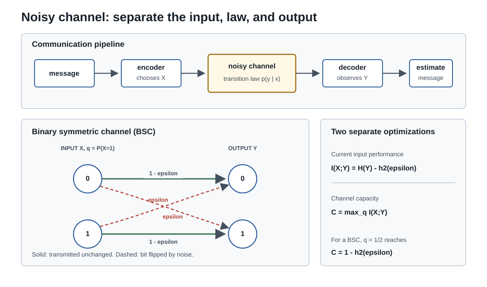

信息论 III · 最大熵、信道容量与"压缩即智能"
收官页三个高峰：最大熵原理（只知道部分信息时该假设什么分布——高斯与指数分布的第三种出身）、信道编码定理（噪声中可靠通信的极限）、以及把全课收束到一个现代命题：压缩即预测即智能——LLM 与信息论的正面相认。

1. 最大熵原理
原理（Jaynes）：在满足已知约束的所有分布中，选熵最大的那个——除了已知的，不额外假设任何东西（"最诚实的无知"，Occam 剃刀的分布版）。
求解 = 带约束的凸优化（优化 III 的 Lagrange 全套上岗）。对约束 \(E[f_k(X)] = c_k\)，Lagrange 函数对 \(p(x)\) 求偏导置零，得通解形式：
三个特例（一张表记住三大分布的"信息论出身"）：
| 已知约束 | 最大熵分布 |
|---|---|
| 仅支撑集 \([a, b]\) | 均匀分布（无知的极致） |
| 支撑 \([0,\infty)\) + 均值 | 指数分布 |
| 均值 + 方差（全实轴） | 高斯分布 |
高斯至此三重身份齐备：CLT 的极限（概率 V）、热核（pde-02）、给定均值方差下最诚实的假设（本页）——"为什么默认高斯"从此有三条独立的答案。统计力学对账一嘴：Boltzmann 分布 \(p \propto e^{-E/kT}\) 恰是"给定平均能量的最大熵分布"——热力学熵与信息熵在数学上是同一个函数（Shannon 请教 von Neumann 命名时的著名轶事有其严肃内核）。指数族也是统计 II 里"有充分统计量、共轭先验"的那族分布——三门课在此互认。
2. 信道容量：噪声中的可靠通信
信道：输入 \(X\)，输出 \(Y \sim p(y\mid x)\)（噪声）。容量：
定理（Shannon 信道编码定理，1948） 传输速率 \(R < C\) 时，存在编码方案使错误率任意小；\(R > C\) 则不可能。
革命性在哪：噪声信道上竟能任意可靠地通信（此前工程师以为噪声必然导致错误积累），代价只是速率不超过 \(C\)——手段是冗余编码（把信息摊在长块上，让噪声"平均掉"——大数定律的通信版）。证明思想（随机编码 + 典型序列）是概率方法的名演；实用纠错码（汉明码、LDPC、Polar 码——5G 里的那个）是把存在性变成工程的七十年长跑。例：二元对称信道（翻转概率 \(\varepsilon\)）：\(C = 1 - h(\varepsilon)\)——上一页例 3 的互信息恰是它（均匀输入达到最大）。
微分熵一嘴（连续版）：\(h(X) = -\int f\ln f\)；可为负（不再是"绝对不确定性"，只有差值/相对量有不变意义）；高斯在给定方差下最大化它（§1 的连续版）；高斯信道容量 \(C = \frac12\log(1 + \mathrm{SNR})\)——香农极限，通信工程的北极星。
3. 压缩即预测即智能（全课收束）
三块拼图合成一个命题：
- 预测 → 压缩（算术编码）：给定预测模型 \(q(x_{t+1} \mid x_{\leq t})\)，算术编码能以恰好 \(-\log q\) 比特编码实际出现的符号——任何预测器都可机械地变成压缩器，压缩率 = 模型的交叉熵；
- 压缩 → 预测（反向同样成立）：好的压缩器隐含好的预测分布；
- 于是：LLM 的训练目标（最小化下一词交叉熵，ai 课 07）字面上就是"把互联网压缩到极致"；困惑度 = 平均分支数 = 每词码长的指数。"压缩即智能"从口号升格为：建模 \(p(\text{世界产生的数据})\) 的精度，与压缩这些数据的能力，是同一个数。
Kolmogorov 复杂度一瞥（理论天花板）：\(K(x)\) = 能输出 \(x\) 的最短程序长度——终极压缩极限；不可计算（停机问题），但给出"随机 = 不可压缩"的定义与 Occam 剃刀的形式化（最小描述长度 MDL 原则：模型选择 = 最小化"模型码长 + 数据码长"——正则化的信息论第三出身，与贝叶斯先验、约束优化三足鼎立）。
4. 典型例题
例 1（最大熵推导指数分布） 支撑 \([0,\infty)\)、\(E[X] = \frac1\lambda\)：\(p^* \propto e^{-\lambda_1 x}\)（§1 通解，\(f_1 = x\)），归一化定出 \(p^* = \lambda e^{-\lambda x}\) ✓——"等待时间无额外假设 ⇒ 指数分布"，概率 II 无记忆性的第三种解释。
例 2（信道容量计算） 翻转率 \(\varepsilon = 0.1\) 的 BSC：\(C = 1 - h(0.1) \approx 0.531\) 比特/次——每传 2 比特原始数据约需 3.8 次信道使用（配上好的纠错码）。
例 3（MDL 直觉） 数据 = 1000 位交替的 0101…：逐位存 1000 比特；"程序：打印 01 五百次"约几十比特——规律 = 可压缩性。反之真随机串无短程序——"看起来乱"与"确实乱"的分界由压缩性判定。\(\blacksquare\)
信息论三页完工。下一门把布朗运动炼成微积分——随机微积分：Itô 引理、SDE，以及金融与扩散模型共用的那套数学。